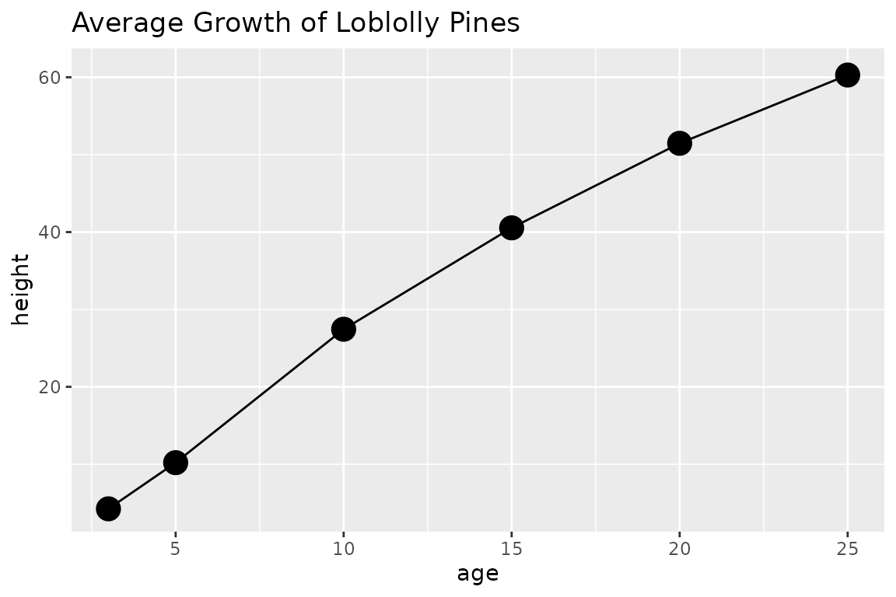

Composing Templates & Functions
Doug Kelkhoff
2025-03-02 19:33:31.465719
Source:vignettes/composing-functions.Rmd
composing-functions.RmdOverview
ggpackets is most powerful when it’s being used to build
template functions. By using it as a framework for packaging components
of a ggplot into a single object, it provides a simple framework for
constructing full featured ggplot wrappers. Most importantly, this will
handle a wealth of ggplot-naitive parameters, exposing complete control
over the components of a plot with minimal added syntax. That’s not to
say there is no work to be done - to elegantly handle parameters
intuitively and with minimal syntactic burden on the end user, there
might be some amount of argument handling in order to satisfy the ideal
user interface. The goal is to allow the programmer to focus on building
around the usability of their function instead of the nuances of
constructing plots and handling interactivity with the extensible ggplot
ecosystem.
Composing a template
First, before we get too far along, ggpackets is nearly
useless without components from ggplot2. Let’s get that
loaded.
To build our first template, we’ll simply add a few layers to a
ggpacket object. We’ll specify some aesthetic parameters -
the size the line layer (geom_line()) and the point layer
(geom_point()).
ggpk_my_template <- ggpacket() +
geom_line(size = 1) +
geom_point(size = 3)## Warning: Using `size` aesthetic for lines was deprecated in ggplot2 3.4.0.
## ℹ Please use `linewidth` instead.
## This warning is displayed once every 8 hours.
## Call `lifecycle::last_lifecycle_warnings()` to see where this warning was
## generated.
ggplot(Loblolly) +
aes(x = age, y = height, color = Seed) +
ggpk_my_template() +
ggtitle("Growth of Loblolly Pines")Although this might be helpful for making quick, reusable code, it
does not provide much flexibility and is for all intents and purposes
equivalent to
list(geom_line(size = 1), geom_point(size = 3)). Perhaps
the syntax is a little more familiar to those that use ggplot regularly,
but aside from that, this simplist form provides very little real
value.
Wrapping a template in a function
Where the power of ggpackets begins to shine is in its
transparent argument handling. If we want to bundle up our function
above, but also want to provide optional handling of additional ggplot
parameters, then ggpackets provides much of that functionality with very
little additional syntax. Here we use the ggpack() function
to articulate parameters to each layer and lump in any extra paramaters
passed to our function.
ggpk_my_template <- function(...) {
ggpacket(...) %+%
geom_line(size = 1, ...) %+%
geom_point(size = 3, ...)
}
ggplot(Loblolly) +
aes(x = age, y = height) +
ggpk_my_template(aes(color = age),
stat = "summary",
fun.data = mean_se,
size = 5,
alpha = 0.5
) +
ggtitle("Average Growth of Loblolly Pines")In the function we declared above, all arguments passed to our
wrapper function get filter down into all the internal layers. When we
pass through the ..., we pass through any unnamed arguments
from the parent function.
In fact, when we call the function, we can pass any arguments that
would typically get passed to either of the ggplot functions wrapped
inside of it, geom_line and geom_point. If we
choose to pass both the data and mapping
parameters (typically set using the ggplot() and
aes() functions when constructing a ggplot object), we
could even use this as a standalone function as shown below.
Be aware that this usage isn’t particularly intuitive without a bit of added documentation. If you’re building a function for someone else to use or to export from a package you’re making, it’s probably worth writing up some good documentation about what parameters you expect people to use.
ggpk_my_template(
data = Loblolly,
mapping = aes(x = age, y = height, color = Seed)
)Granular Parameter Passing
There is one lingering issue. In this case, all parameters are being
passed to both of the ggplot layers wrapped inside of our function. You
can see the impact of this issue above, because both the size
(thickness) of the lines and the size (diameter) of the points changed
when we set a new size. If we want to control one or the other
independently, we need a more precise way of passing parameters. This
can be addressed by adding an identifying string to each of our layers
using the id parameter to ggpack().
If we want to restrict parameters to only one layer or another,
ggpackets can handle the filtering of parameters through to
each of the layers by parsing the parameters for prefixes that match
that particular layer’s id. For example, if a layer has an
id = 'my_ggplot_layer', then we might pass the function a
parameter like my_ggplot_layer.size (the id and parameter
name separated by a period) to set the size parameter of that particular
layer without affecting the others.
ggpk_my_template <- function(...) {
ggpacket() %+%
geom_line(.id = "line", size = 1, ...) %+%
geom_point(.id = "point", size = 3, ...)
}
ggplot(Loblolly) +
aes(x = age, y = height, color = Seed) +
ggpk_my_template(point.size = 5, line.size = 0.5) +
ggtitle("Average Growth of Loblolly Pines")Lists are also permitted as an id, allowing for any one
of a number of different prefixes to capture arguments for a particular
layer.
ggpk_my_template <- function(...) {
ggpacket() %+%
geom_line(.id = c("all", "line"), size = 1, ...) %+%
geom_point(.id = c("all", "point"), size = 3, ...)
}
ggplot(Loblolly) +
aes(x = age, y = height) +
ggpk_my_template(
stat = "summary",
fun.data = mean_se,
point.size = 5,
line.size = 0.5
) +
ggtitle("Average Growth of Loblolly Pines")
Default, User and Fixed Parameters
The ordering of the parameters passed to any layer carries its own
significance and can be used to exercise further control over how your
function operates. If a parameter is passed to the layer more than once,
the last instance always takes priority. This includes parameters passed
as a list via the dots parameter. This allows calls to be
constructed in a way that dictates which arguments are set in stone and
which can be ovewritten by the user.
Take for example the following function where all ellipses parameters
are passed through to the layers using the dots parameter.
In the first layer, size is declared before the parameters
passed in by the user, whereas the second has size passed
after the user parameters.
ggpk_my_template <- function(...) {
ggpacket() %+%
geom_line(.id = "line", size = 3, ...) %+%
geom_point(.id = "point", ..., size = 3)
}The user will be able to set the size of the line layer, but will be
unable to change the size of the point layer because the last
size parameter will always take precedent (even if it’s
passed with a prefix, like point.size). This gives
considerable control over what impact the user can have over the plot
template.
ggplot(Loblolly) +
aes(x = age, y = height, color = Seed) +
ggpk_my_template(line.size = 0.1, point.size = 10) +
ggtitle("Average Growth of Loblolly Pines")